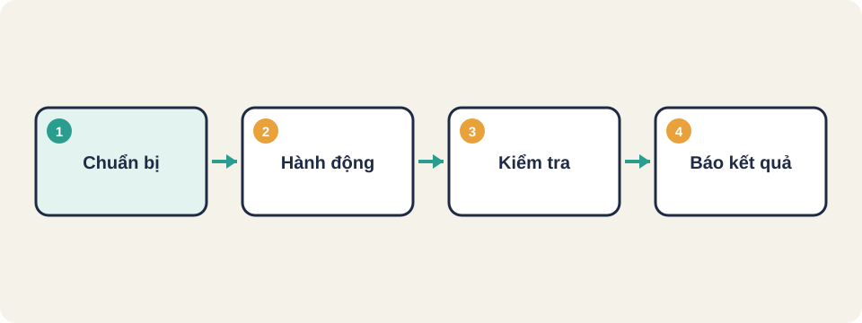
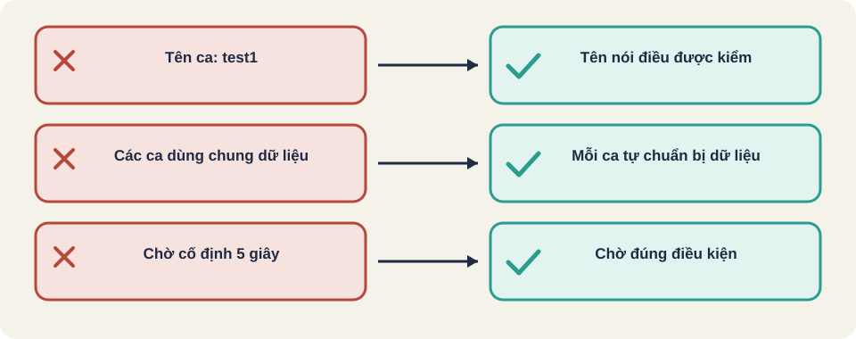

Hình vẽ gốc, dùng để minh họa thứ tự các bước chính của bài.
Viết test có kiểm tra tự động: so kết quả, in ca nào sai, và chạy lại được mỗi khi sửa code.

Hình vẽ gốc, dùng để minh họa thứ tự các bước chính của bài.
static int dem_loi = 0;
void kiem(const char *ten, int thuc, int mong) {
if (thuc != mong) {
printf("FAIL %s: nhan %d, mong %d\n", ten, thuc, mong);
dem_loi++;
}
}Mỗi ca là một lời gọi kiem(...). Cuối chương trình in số ca lỗi.
Một test chỉ có ca đúng là chưa đủ. Nên có: ca bình thường, ca biên, ca không hợp lệ, và ca từng gây lỗi trước đây (test hồi quy).
Quy tắc: năm chia hết cho 400 là nhuận; chia hết cho 4 nhưng không chia hết cho 100 cũng là nhuận. Hãy liệt kê ca test cho năm 2000, 1900, 2024, 2023.
2000 là nhuận (chia hết cho 400). 1900 không nhuận (chia hết cho 100 nhưng không chia hết cho 400). 2024 nhuận. 2023 không nhuận.
Tên ca nên nói điều được kiểm, để khi ca đỏ người đọc hiểu ngay chỗ hỏng mà không cần mở code.
// Tên mơ hồ
test_leap1()
// Tên nói rõ điều kiểm
nam_chia_het_cho_400_la_nhuan()
nam_chia_het_cho_100_khong_chia_het_400_khong_nhuan()Kiến thức chung, chưa đối chiếu nguồn gốc.
Kiến thức chung, chưa đối chiếu nguồn gốc.
static int dem_loi = 0;
void kiem(const char *ten, int thuc, int mong) {
if (thuc != mong) {
printf("FAIL %s: nhan %d, mong %d\n", ten, thuc, mong);
dem_loi++;
}
}
int main(void) {
kiem("2000 nhuan", is_leap(2000), 1);
kiem("1900 khong nhuan", is_leap(1900), 0);
printf("%d ca loi\n", dem_loi);
return dem_loi != 0;
}Hàm trả về khác 0 khi có lỗi, để công cụ build hoặc CI biết bộ test thất bại.

Khung kiểm thử (test framework)
Assertion (khẳng định)
Kiểm thử hồi quy tự động (automated regression)
Mọi ca test đều có ba phần: chuẩn bị, hành động, kiểm tra.
Test tốt có tên mô tả đúng điều nó kiểm, ví dụ nam_chia_het_cho_400_la_nhuan.
is_leap(year).Nguồn: Selenium WebDriver documentation (selenium.dev), mục WebDriver [đã đọc].
Nguồn: github.com/PaulWaltersDev/FreeLearningResourcesForSoftwareTesters, mục "Test Automation". Tìm tên tài liệu trong repo để lấy liên kết.